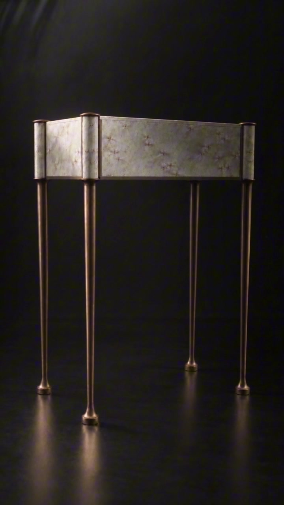
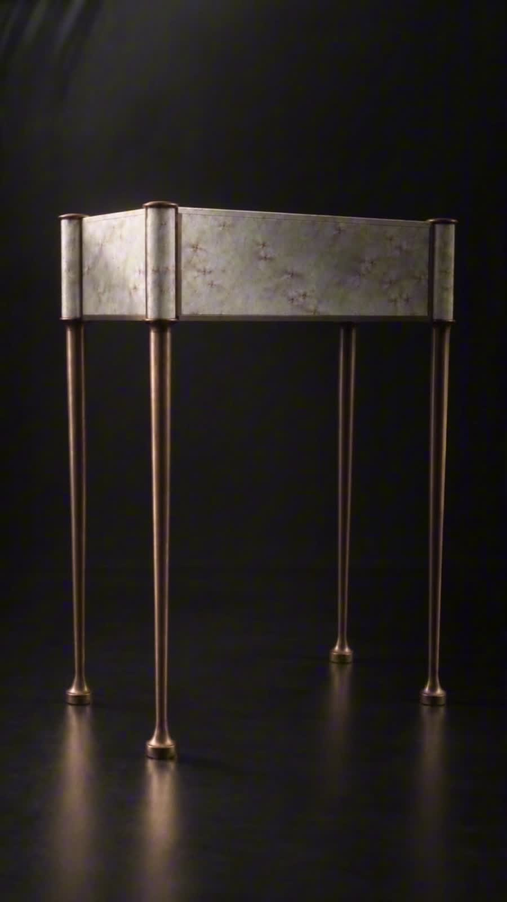
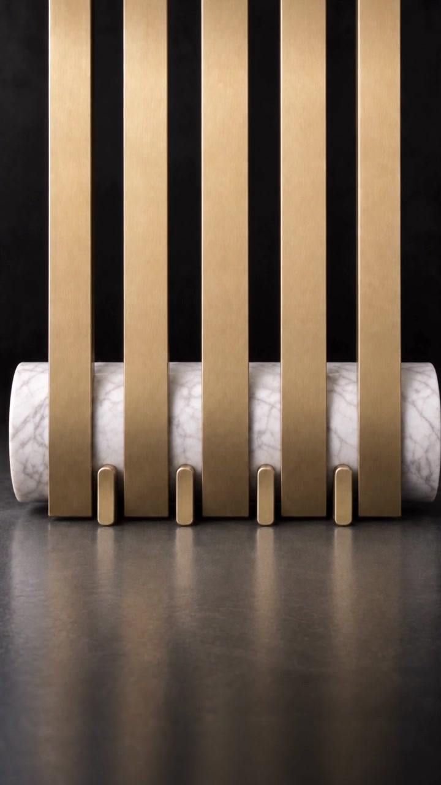
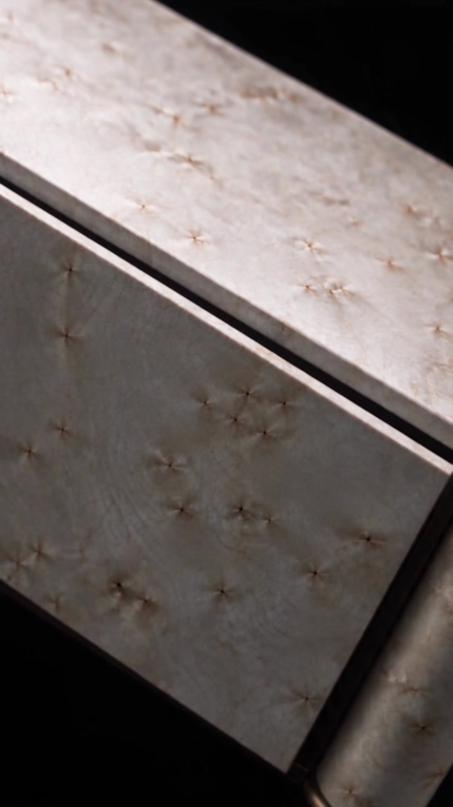
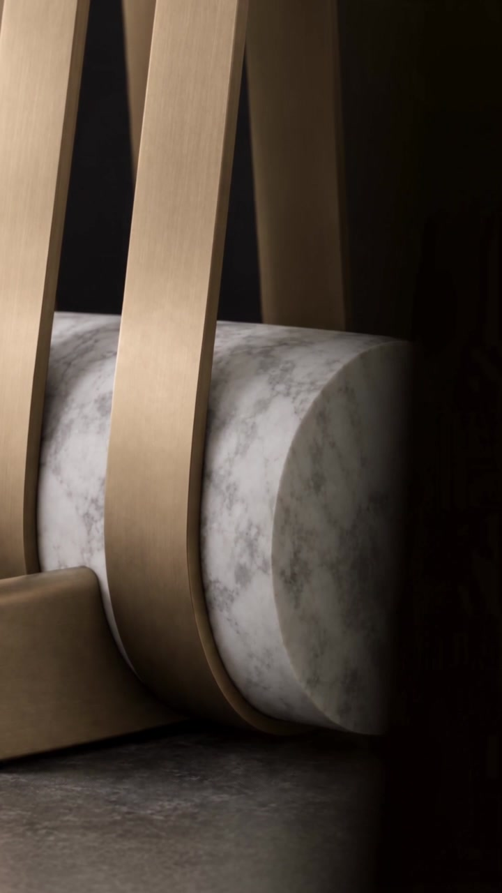
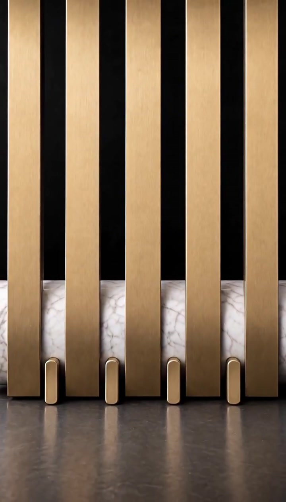
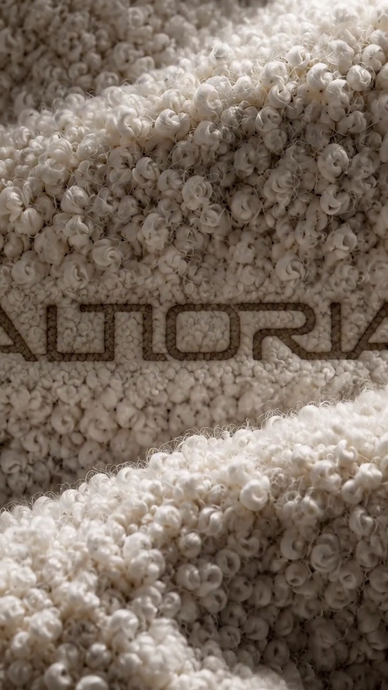
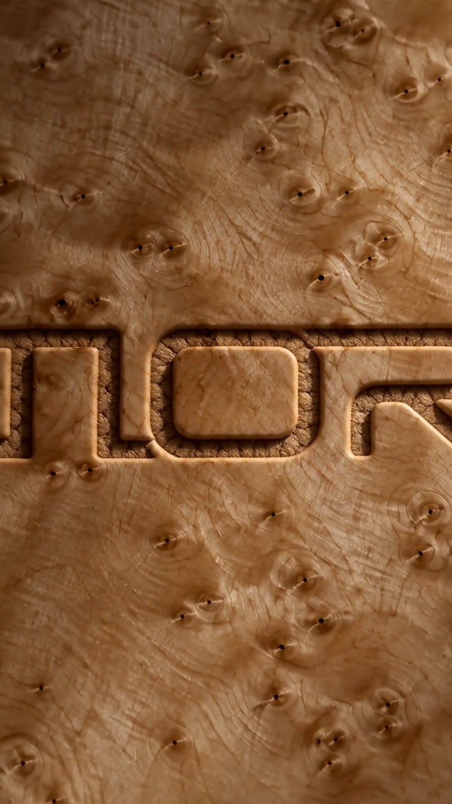
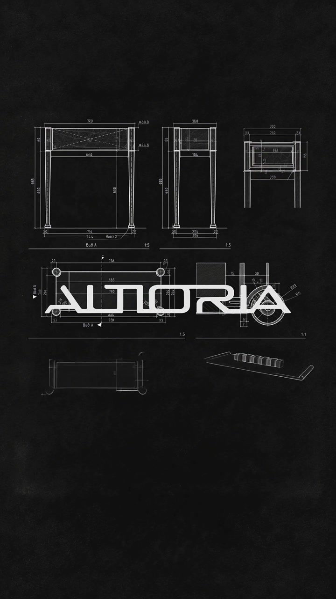

0100:30
LYRA
The product portrait
A study of silhouette, figured veneer and bronze.
A SELECTED PORTFOLIO / ALTIORIA
A cinematic language for objects.
Form, material and detail, brought to life.
CONCEPT · 3D MODELLING · AI FILMMAKING

01 / SELECTED FILMS
Eight films. Each with its own voice.
Product portraits, material studies and brand films.
Play a film to experience its original sound.

The product portrait
A study of silhouette, figured veneer and bronze.

Form & construction
From the drawn line to the finished object.

A closer look
Material, movement and the rhythm of detail.
Light reveals a surface.
Movement reveals a form.

Object study

A visual transformation

Brand in texture

A brand study
02 / BRAND FILM
Archival lines, material and movement.
A brand story for ALTIORIA.

ALTIORIA · Brand film
Technical lines, archival atmosphere and the brand signature.
Furniture design and brand: ALTIORIA.
3D modelling, visual concept, AI generation, animation and editing: Inna Martinova.
03 / THE APPROACH
I translate furniture into a visual experience — combining the precision of 3D with the expressive possibilities of AI.
3D modelling from technical drawings, with attention to geometry, proportions and construction.
Visual concept, materials, lighting, composition and a considered language of camera movement.
AI image generation, animation and editing, developed into a complete product or brand film.
Visual concept · 3D modelling · AI generation · Animation · Editing
FURNITURE DESIGN & BRAND: ALTIORIA04 / LET’S CREATE
Visual storytelling for furniture,
interiors and design brands.
Based in Moscow · Open to relocation to France
Available for international collaborations